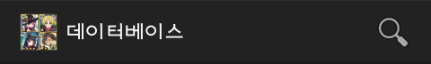
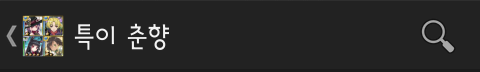
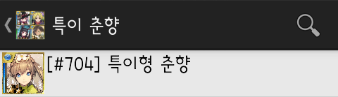
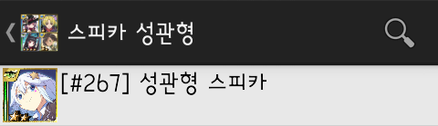
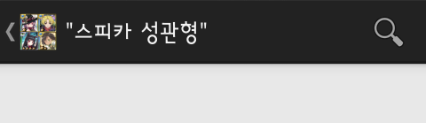
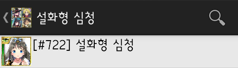
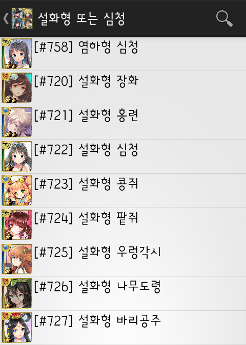
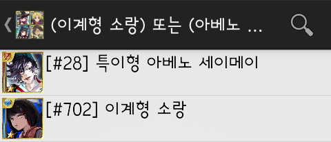

검색 도움말
확밀아 카드정보 뷰어의 기능 중 하나인 검색 기능을 사용할 땐 여러 가지 검색 필터를 사용할 수 있습니다. 검색 필터는 카드의 이름뿐만 아니라 진영, 레어도 등의 정보를 비교하여 검색 결과를 만들어 냅니다.
검색해 보자
좌측 상단에 검색 버튼이 있는 경우 그것을 누르거나 디바이스의 검색 버튼(없는 경우 대개 메뉴 버튼을 길게 누르면 됨)을 누르면 검색 창이 나타납니다.
 
여러 가지 검색법
- 띄어쓰기로 구분된 구절들은 기본적으로 그 구절 모두의 조건을 만족하는 카드를 검색합니다.
예: '특이 춘향'은 카드 이름에 '특이'와 '춘향'을 모두 포함하고 있는 카드를 검색합니다.

- 큰따옴표로 둘러싸인 문자열은 그 안에 있는 띄어쓰기를 구절 구별의 단위로 보지 않고 구절을 이루는 요소로 생각됩니다.
예: '스피카 성관형'은 '성관형 스피카'를 검색하지만 '"스피카 성관형"'은 그것을 검색하지 않습니다.
 
- ' or '(대소문자 구분 안 함) 또는 ' 또는 ' 으로 구절이 이어진 경우, 앞뒤 구절의 검색 결과를 합칩니다. 이를 '또는 연산자'라고 합니다.
예: '설화형 심청'은 '설화형'과 '심청'을 모두 포함한 카드를 검색하지만 '설화형 또는 심청'은 '설화형'의 검색 결과와 '심청'의 검색 결과를 합칩니다.
 
- 소괄호로 묶인 여러 구절들은 또는 연산자와 연결될 때 한 구절로 생각됩니다.
예: '(이계형 소랑) 또는 (아베노 세이메이 특이형)'은 '이계형 소랑'의 검색 결과와 '아베노 세이메이 특이형'의 검색 결과를 합칩니다.

- 느낌표('!')가 앞에 붙은 구절은 그 구절을 만족하지 않는 카드를 검색합니다.
여러 가지 검색 필터
- 진영?진영이름: 진영이 진영이름인 카드를 검색합니다.
진영이름: 검술, 기교, 마법, 요정 중 하나
- 성별?성별: 성별이 성별인 카드를 검색합니다.
성별: 남, 여 중 하나
- 일러?일러스트레이터: 일러스트레이터가 일러스트레이터 이름의 부분인 카드를 검색합니다.
- 스킬?스킬이름: 스킬이름이 스킬 이름의 부분인 카드를 검색합니다.
- 본문?본문: 본문이 카드 설정의 부분인 카드를 검색합니다.
- 레어도?[연산자]레어도:
레어도가 주어진 조건에 맞는 카드를 검색합니다. [연산자]는 선택 요소입니다.
[연산자]: <, =, >, <=, >= 중 하나. 생략 시 =을 사용함
레어도: SUPER RARE+, SR+, 슈레플과 같은 레어도 명칭. + 대신 P 사용 가능